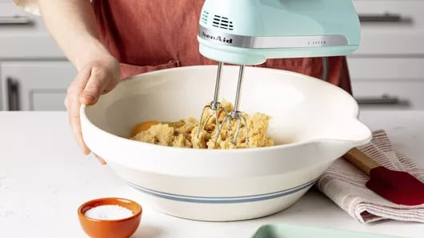
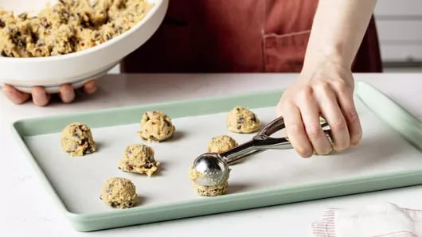

This is our best pumpkin cheesecake recipe yet. A scrumptious blend of
sweet brown sugar, savory spice, and the perfect seasonal flavors of
pumpkin – pumpkin cheesecake is the perfect autumn dessert. Much
sweeter and creamier than pumpkin pie, it’s an indulgent finisher to
your fall meals.
This easy pumpkin pie cheesecake recipe only takes about 20 minutes of
prep, so it’s so easy to throw together and bake in the oven. And the
results are incredible. A sweet, crunchy cracker crust topped with
creamy pumpkin cheesecake, topped just the way you like it is just the
thing to take any meal to the next level.
Ingredients
- 1 3/4 cups graham cracker crumbs (about 24 squares)
- 1/2 tablespoons granulated sugar
- 1/2 cup butter or margarine, melted
- 1/4 cup Gold Medal™ all-purpose flour
- 2 teaspoons pumpkin pie spice
- 2 tablespoons brandy, if desired
- 1 can (15 oz) pumpkin (not pumpkin pie mix)
- 4 packages (8 oz each) cream cheese, softened
- 1 cup packed brown sugar
- 2/3 cup granulated sugar
- 5 eggs
Crust
Filling
Steps
①Heat oven to 325°F. Grease 9-inch springform pan with
shortening. Wrap foil around pan to catch drips. In small bowl,
mix cracker crumbs, 2 tablespoons granulated sugar and the
melted butter. Press crumb mixture in bottom of pan. Wrap foil
around outside of pan to prevent drips. Bake crust 8 to 10
minutes or until set. Cool 5 minutes at room temperature.
Refrigerate about 5 minutes or until completely cooled.

②Meanwhile, in another small bowl, whisk flour, pumpkin pie
spice, brandy and pumpkin together until well blended; set
aside. In large bowl, beat cream cheese with electric mixer on
medium speed until smooth and creamy. Gradually beat in brown
sugar and 2/3 cup granulated sugar until smooth. On low speed,
beat in 1 egg at a time just until blended. Gradually beat in
pumpkin mixture until smooth.

③Pour filling over crust. Bake 1 hour 15 minutes to 1 hour 25
minutes or until set but center of cheesecake still jiggles
slightly when moved. Turn oven off; open oven door at least 4
inches. Let cheesecake remain in oven 30 minutes.

④Run knife around edge of pan to loosen cheesecake. Cool in pan
on wire rack 30 minutes. Refrigerate at least 6 hours or
overnight before serving.

⑤To serve, run knife around edge of pan to loosen cheesecake.
Carefully remove side of pan before cutting cheesecake. Store
covered in refrigerator.